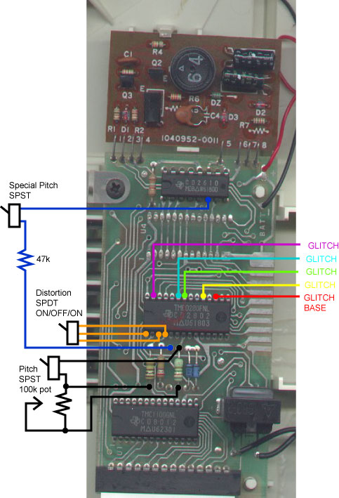
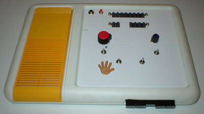
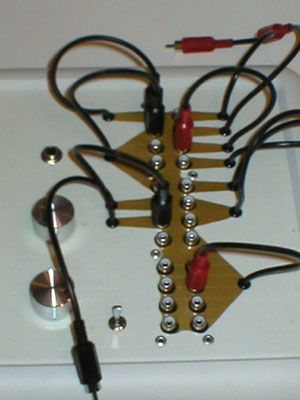
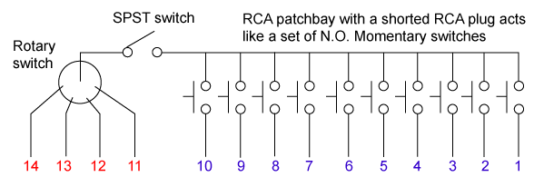

|
Bending Index |
|
Touch and Tell mods I have done two Touch and Tells. They each had a different pcb. Here is the setup I used for the first Touch and Tell. I am working on putting together the second one. The most obvious difference is the resistors between the ICs. I have not listed the setup for selecting modes/cards or replacing the membrane pad. The modes/cards is just basic SPST switches or dipswitches. Membrane info can be found on the Touch & Tell membrane map page. For the first T&T I used momentary switches (Photo black buttons middle top), and for the second I used a combo of 1 rotary switch, 1 SPST switch, and a "shorted" RCA plug with RCA jacks (Photo knob, switch, and 10 jacks bottom of photo). I recommend going a non-momentary route because the T&T will repeat if the switch is held down. Update 7.3.06 Added membrane hook up info to bottom of page. I think the schematic is pretty straight forward. With the 4 glitches you could go rotary for one at a time or multi SPST switches to combine. The Special Pitch is quite nice. I could not think of a good descriptive name, but it goes back and forth between pitch fast/pitch slow on its own. This can also be used with the pitch control but it will cutout halfway through the the pitch range (cuts out mid to slow, works fast to mid). This cutting out does not crash the T&T turn back to the "usable range" and it is still going.  Updated info What might not be clear from the photos of the two methods of replacing the membrane is how they are actually hooked up.  The 2 rows of buttons are N.O. mom buttons (8 on top row, 2 on bottom row left, and 4 bottom row right). They are wired up in the way below, and two buttons have to be pressed together for sound/word to be triggered.   On the other T&T 4 wires were connected to a rotary switch with the center pole connected to a SPST switch. The SPST will make or break connection to a common point for the other 10 wires. For aesthetic reasons I used RCA patchbays for nearly all switch functions. The RCA plugs have the center and rings shorted together. The RCA patchbays are wired so that plugging in the RCA plug completes a signal path. Otherwise the signal path is open, and that is how I used RCA patchbays to act like/replicate/function like a set of N.O. momentary switches. Dial the rotary, plug in the RCA plug, and use the SPST to trigger the sound/word.  To loop/repeat sounds/words with the all N.O. mom setup you have to keep the 2 buttons held down. The other setup just flip the SPST to ON. This looping/repeating is just like pressing and holding the original membrane buttons, not the stuttered phenome looping. |
;){kind=link}
;){kind=link}